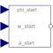
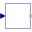

InitializeFlangeInitializes a flange with pre-defined angle, speed and angular acceleration (usually, this is reference data from a control bus) |

|
Diagram
{kind=link}
Information
This information is part of the Modelica Standard Library maintained by the Modelica Association.
This component is used to optionally initialize the angle, speed, and/or angular acceleration of the flange to which this component is connected. Via parameters use_phi_start, use_w_start, use_a_start the corresponding input signals phi_start, w_start, a_start are conditionally activated. If an input is activated, the corresponding flange property is initialized with the input value at start time.
For example, if "use_phi_start = true", then flange.phi is initialized with the value of the input signal "phi_start" at the start time.
Additionally, it is optionally possible to define the "StateSelect" attribute of the flange angle and the flange speed via parameter "stateSelection".
This component is especially useful when the initial values of a flange shall be set according to reference signals of a controller that are provided via a signal bus.
Parameters (4)
| use_phi_start |
Value: true Type: Boolean Description: = true, if initial angle is defined by input phi_start, otherwise not initialized |
|---|---|
| use_w_start |
Value: true Type: Boolean Description: = true, if initial speed is defined by input w_start, otherwise not initialized |
| use_a_start |
Value: true Type: Boolean Description: = true, if initial angular acceleration is defined by input a_start, otherwise not initialized |
| stateSelect |
Value: StateSelect.default Type: StateSelect Description: Priority to use flange angle and speed as states |
Connectors (4)
Components (4)
| set_phi_start |
Type: Set_phi_start |
|
|---|---|---|
| set_w_start |
Type: Set_w_start |
|
|  | set_a_start |
Type: Set_a_start |
| set_flange_tau |
Type: Set_flange_tau |
Used in Components (1)
|
Modelica.Mechanics.MultiBody.Examples.Systems.RobotR3.Utilities Axis model of the r3 joints 4,5,6 |